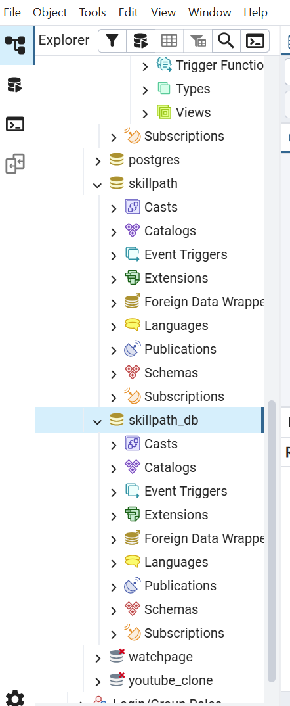

See your SkillPath data in pgAdmin
Follow the steps in order. Step 2 uses your own screenshot. The other pictures are simple drawings that show what to look for. Your pgAdmin will look similar but not identical.
1 Connect pgAdmin to the right PostgreSQL
You already have a server in pgAdmin's left panel. If you ever need to add it again: right-click Servers → Register → Server, then fill the Connection tab like this:
The port must be 5433. pgAdmin suggests 5432 by default, which is not where your PostgreSQL listens.
2 Pick the right database: skillpath
This is your screenshot. Your backend uses the database named skillpath. The one called skillpath_db is a different database and is not used by the app.

◀ USE THIS ONE ◀ open Schemas ◀ NOT used by the app- Click the small arrow next to Schemas under skillpath (the green box).
- Do not use anything under skillpath_db.
3 Open the tables
Keep expanding until you reach Tables:
If you see these 11 tables, pgAdmin and your backend use the same database. If the list is empty, you are on the wrong database or the wrong port.
4 Look at the saved data
- Right-click a table, for example
quiz_scores. - Choose View/Edit Data → All Rows.
A grid opens with the rows your app saved, something like this:
| id | user_id | quiz_id | last | best | attempts |
|---|---|---|---|---|---|
| 1 | 3 | frontend | 83 | 83 | 1 |
The users table shows your account. The password column holds a scrambled hash, never your real password.
5 Live test: watch a save arrive
- In the SkillPath app (signed in, backend running), click Mark Complete on a lesson.
- Go back to pgAdmin, right-click
lesson_progress→ View/Edit Data → All Rows. - Click the refresh button or run it again. A new row appears within a couple of seconds.
New row appears: frontend, backend and database are all connected.
No new row: the save did not reach the database. Check that the backend is running, that you are signed in, and look at the backend terminal for a line like PUT /progress/frontend ... 200 OK.
6 Check that the backend is connected right now
- Click the skillpath database (not skillpath_db).
- Open the Dashboard tab.
- Look at Database sessions while the backend is running.
| PID | User | Database | State |
|---|---|---|---|
| 1234 | postgres | skillpath | idle |
A row for the skillpath database means your backend is connected. If the list is empty while the app is open, the backend is not connected to this server.